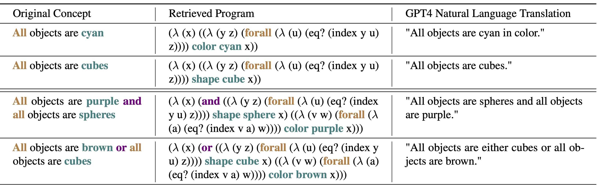

The challenge in learning abstract concepts from images in an unsupervised fashion lies in the required integration of visual perception and generalizable relational reasoning. Moreover, the unsupervised nature of this task makes it necessary for human users to be able to understand a model's learned concepts and potentially revise false behaviors. To tackle both the generalizability and interpretability constraints of visual concept learning, we propose Pix2Code, a framework that extends program synthesis to visual relational reasoning by utilizing the abilities of both explicit, compositional symbolic and implicit neural representations. This is achieved by retrieving object representations from images and synthesizing relational concepts as λ-calculus programs. We evaluate the diverse properties of Pix2Code on the challenging reasoning domains, Kandinsky Patterns, and CURI, testing its ability to identify compositional visual concepts that generalize to novel data and concept configurations. Particularly, in stark contrast to neural approaches, we show that Pix2Code's representations remain human interpretable and can easily be revised for improved performance
We show that Pix2Code can learn to compose complex visual concepts as interpretable programs. The learned programs apply a sequence of operations on the symbolic object representations of the input image to transform it into the desired boolean output (i.e., does the image belong to the concept).
We evaluate Pix2Code on the Kandinsky Patterns and CURI datasets. We show that Pix2Code can generalize to novel data and concept configurations, outperforming neural baselines (for all experiments, please have a look at the paper).
One of the key advantages of using programs to represent visual concepts is that they generalize well to unseen examples of the concepts. We show this by increasing the number of objects for, e.g., samples of the concept "All objects are cubes". The program representation of this concept retrieved by Pix2Code can be easily applied to any number of objects, while the neural baseline struggles to generalize.
The neuro-symbolic nature of Pix2Code allows for human users to understand the learned concepts and potentially revise false behaviors. This can be done on the program level but also by interacting with the library used to generate programs. From this library, program primitives can be added, changed and removed to change the behavior of the model. We illustrate the revision possibilities (+ XIL) by adding and removing primitives in two case studies.
@article{wust2024pix2code,
title={Pix2code: Learning to compose neural visual concepts as programs},
author={W{\"u}st, Antonia and Stammer, Wolfgang and Delfosse, Quentin and Dhami, Devendra Singh and Kersting, Kristian},
journal={UAI},
year={2024}
}